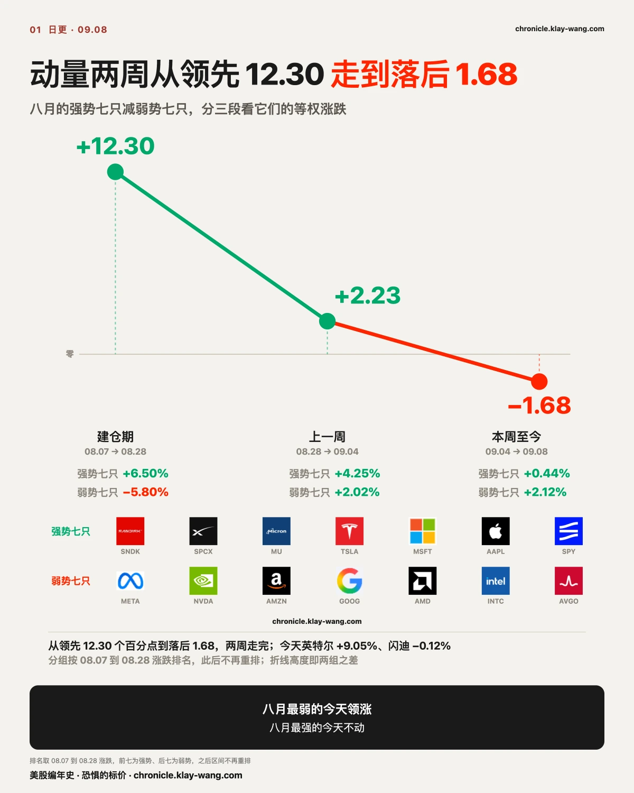
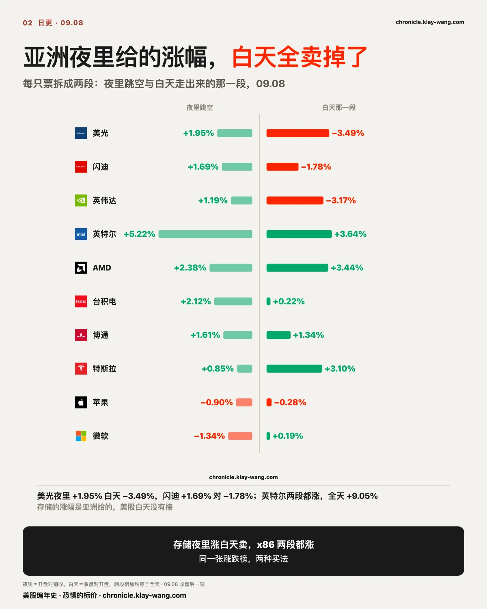
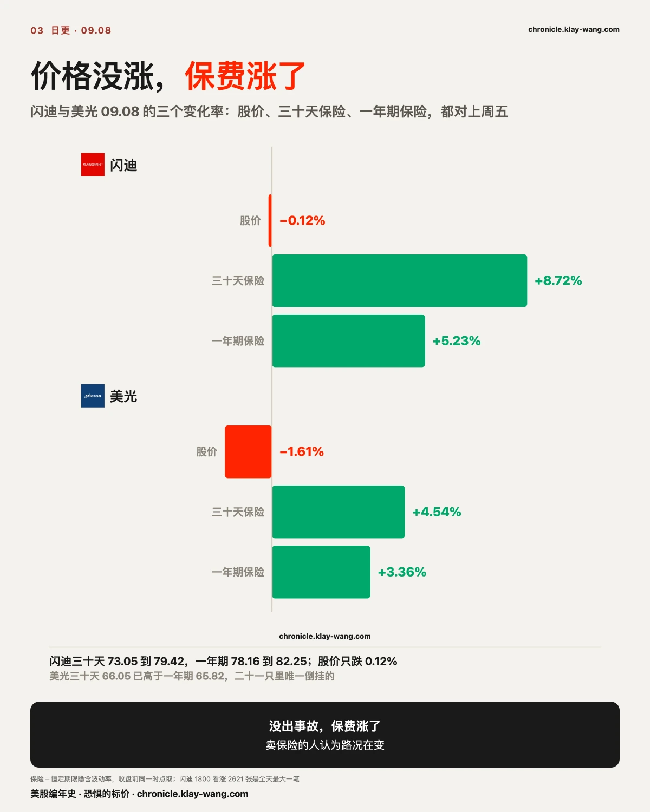
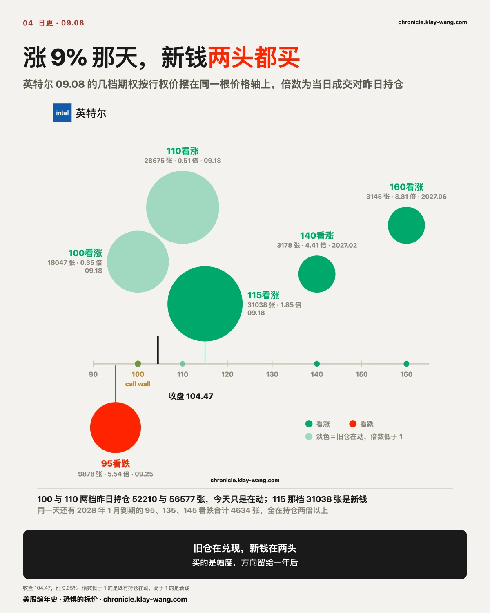
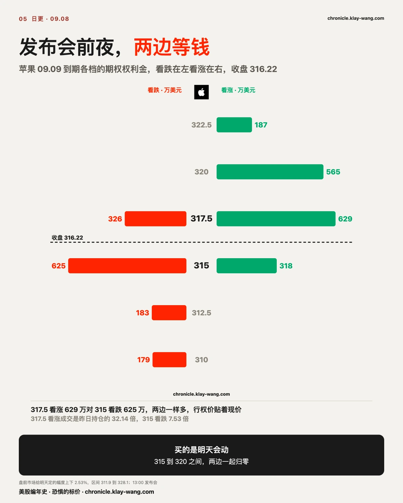
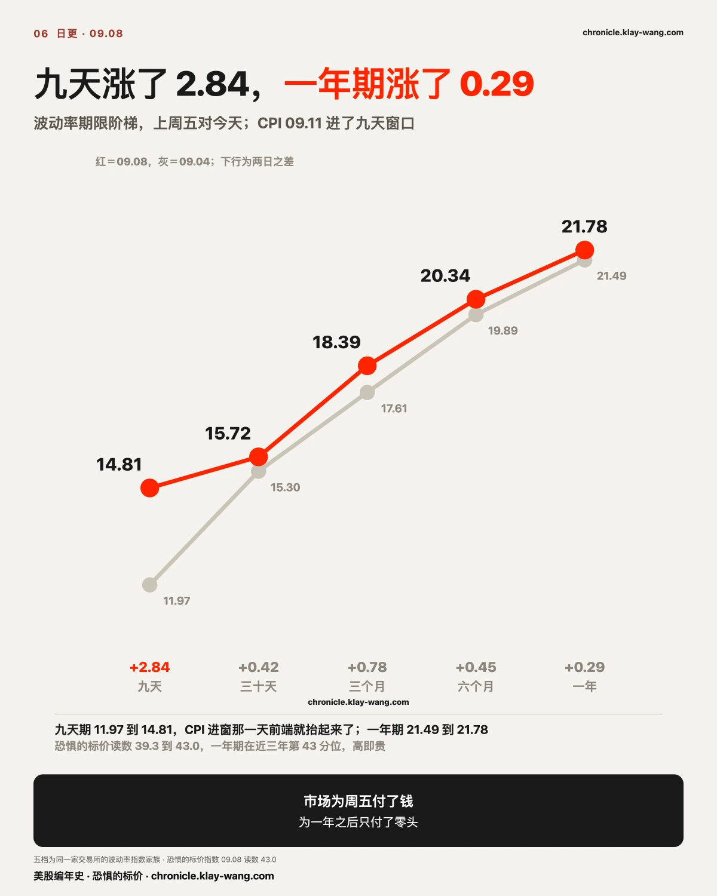
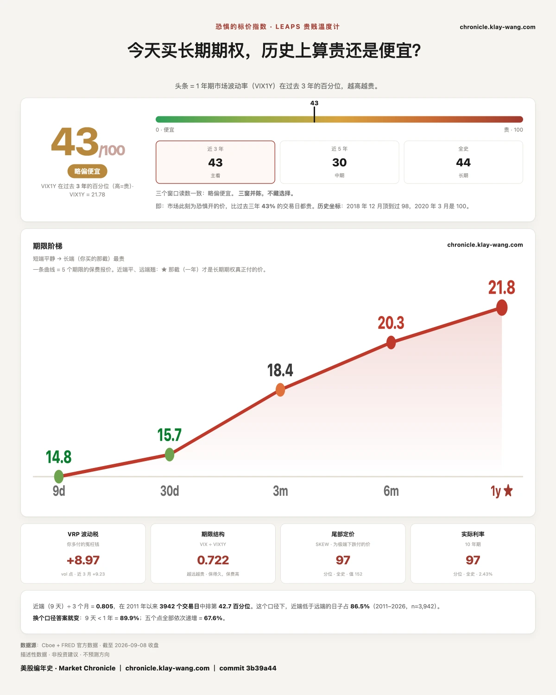

财报很好，硬件股却涨不动，这个感觉不是错觉。今天的盘面把原因摆得很清楚，只是它不在财报里。
同一天，同一个板块，两种走法。半导体八只均值 +2.17%，里面英特尔 +9.05%、AMD +5.90%，而英伟达 −2.01%、美光 −1.61%、闪迪 −0.12%。软件与平台六只均值 −0.77%，微软 −1.15%，Palantir −2.31%。指数几乎没动：标普 −0.55%，纳指 100 −0.08%，二十年以上国债 −0.01%，VIX 收 15.72。
存储的涨幅是亚洲夜里给的，美股白天没接。美光夜里 +1.95%、白天 −3.49%，闪迪 +1.69% 对 −1.78%，英伟达 +1.19% 对 −3.17%。
这一期讲它的机制：给股价定价的那块钱里，很大一部分来自动量，而动量正卡在换挡的中间。
先把机制说清楚，后面的数字才有地方落。
华尔街和 A 股最大的不同，是做空方便且常见，因此多空策略是常态。同一个科技股池子里，通常同时压着两套方向相反的仓位：长线的一套偏多半导体、偏多云厂商，偏空软件；短线的一套反过来，卖出半导体，买入软件和新云公司。
两套仓位并存的时候，风格一旦切换，强势股会突然回撤，落后的板块会快速反弹。看上去像基本面出了问题，实际发生的是钱在两边挪。而在反复切换的过程里，动量本身是起不来的，于是就出现英伟达财报很好、整个半导体却涨不动的局面。缺的那样东西叫动量，不是业绩。
所以这段拧巴的行情，主导它的是动量资金，不是基本面资金。要看懂接下来，就得先看清动量走到了哪一步。
这句话可以量。做法是把八月的强势与弱势分出来，看它们最近怎么走。
用 08.07 到 08.28 的涨跌给二十一只票排名，前七名是强势组（闪迪、SpaceX、美光、特斯拉、微软、苹果、标普），后七名是弱势组（Meta、英伟达、亚马逊、谷歌、AMD、英特尔、博通）。强势组减弱势组，就是动量这台发动机的转速：
从领先 12.3 到落后 1.68，两周走完。英特尔今天涨 9.05% 而闪迪跌 0.12%，正是这台发动机换挡时的画面：八月最弱的那只领涨，八月最强的那只不动。
七月那次动量冲击的记忆还在，AI 硬件股当时暴跌过一轮。历史上，动量因子相对标普 500 见顶回落之后，通常要好几个月的震荡和换手才会重新走强，很少一个月就重启。这一次距离七月那轮不过两个月，眼下这段反复正是它该有的样子。

动量侧现在的仓位和杠杆都不高，指数的波动率也偏低，VIX 收在 15.72。短线聪明钱的参与度是低的。两个原因，都能在盘面上找到对应。
第一是九月本身有扰动。 这周五 CPI，下周二三 FOMC。今天九天期保险一天涨 2.84，一年期只涨 0.29；押 CPI 当天到期的钱里看涨占 78%。钱在为接下来这十天的波动付费，一年后的方向没人付钱。 数据没出来之前，加仓的成本是确定的，收益是不确定的。
第二是七月那次冲击的余震还没走完。 动量策略在七月刚经历一次明显打击，恢复需要时间换手。
保险价钱把这件事说得更直白。今天二十九个标的的三十天保险没有一个变便宜，均涨 2.55 点：英特尔 +6.76、迈威尔 +6.79、闪迪 +6.37、AMD +4.87，软件那一侧微软 +2.28、谷歌 +2.57、Meta +3.19。涨的票和跌的票，保险一起涨价。 如果是基本面在定价，保险会跟着方向分开走；一起涨，说明卖保险的人认为接下来会动得更大，但不认为谁对谁错已经定了。
英特尔那一节把这件事拆到了合约层：旧仓在兑现，新钱一头买 +53% 的看涨，一头买 −9% 的看跌。买的是幅度，方向没人押。换仓的时候，账本长的就是这个样子。
摩根士丹利首席美股策略师 Mike Wilson 今天写道：动量有重启的基础，但领涨的票会换。他把近期动量股的回调定性为经济周期从早期转向中期，主线从 AI 基础设施供应商转向 AI 应用公司，不是一次简单的再配置。他点名软件、金融服务、保险、医疗保健更可能成为这轮的主力。
我们的表给出的是相反的近况。两周里半导体 ETF +4.93%，软件 ETF −0.20%（前一周 +7.35%、后一周 −6.66%，先冲后垮），小盘软件 −1.72%，金融 −1.58%，医疗 −4.33%。他点名的四个方向，两周里没有一个是在涨的。
但有一处数据站在他那边，而且只有这一处。把保险价钱拉到两周看，半导体的三十天保险均降 0.97 点，软件均升 1.38 点。 半导体价格在涨而保险在变便宜，市场把它当趋势延续，不当事件；软件价格在跌而保险在变贵，有人在为它接下来的波动先付钱。转向通常是先有人买保险，再有价格反应。软件现在正好停在第一步上。
钱现在在半导体，而为软件买保险的人正在变多。 这两件事同时成立，不矛盾，它们描述的是换挡过程的两个不同瞬间。

宏观决定估值上限。九月加息与否，长短端利率能不能稳住，这两件事定的是所有资产的折现率。今天 MOVE 从 73.10 到 76.14，三年分位从 17.9 到 24.1，仍在最便宜的四分之一。
AI 收入决定市场信心。九月下旬台积电、ASML、谷歌、微软、亚马逊等接力披露，那是需求端的真实检验。
硬件兑现决定主线。美光 09.30 财报在三十天窗口里，今天它的近月保险 66.05 已经高于一年期 65.82，全组二十一只里只有它倒挂。市场在为一个日期付钱，那个日期是 09.30。
而市场什么时候加速，取决于动量什么时候回来。时间线很清楚：本周五 CPI，下周二三 FOMC，九月下旬中期选举提上日程与那批财报。数据检验期里市场会反复波动，一旦宏观压力缓和、基本面没出大问题，资金重新加风险，动量资金就是最直接的买入方向。
机会往往在这中间，不在两头。
闪迪今天收 1737.99，跌 0.12%。把它的保险价钱摆出来：三十天期的隐含波动率上周五 73.05，今天 79.42，涨 6.37 个点；一年期 78.16 到 82.25，涨 4.09。美光三十天 63.18 到 66.05，一年期 63.68 到 65.82。
价格没动，保费涨了。
08.21 那期写过车险的框：出了事故，保费却没涨，卖保险的人认定那一周是事故，路况没变。今天是反过来的一句。没出事故，保费涨了。 他们今天把闪迪未来三十天和未来一年的价钱都调高了，意思是在他们的账本上，这一段路况在变，变的方向他们不说，只收钱。
钱压在哪一档也对得上。全天单笔期权权利金最大的一档是闪迪 09.18 到期的 1800 看涨，2621 张，1884 万，行权价在收盘价上方 3.6%。美光 09.18 到期的 1100 看涨 4335 张 553 万，1020 看涨 2593 张 923 万。同一层里看跌很少，闪迪 1510 看跌只有 694 张 87 万。
反面也摆出来。新浪那篇闪迪的稿子把风险写得很清楚：上季度增长三分之二来自涨价，TrendForce 说三季度 NAND 合约价只涨 10% 到 15%，闪迪消费者业务环比跌 32%，三星与海力士在韩国约 5180 亿美元的新产能在路上，闪迪的份额五个季度没动。正方是野村与苹果长约，反方是这篇。我们的尺子只给一个读数：今天涨的是保费，不是价格。

英特尔今天收 104.47，涨 9.05%，距一年高点 142.35 回撤 26.6%。新闻两条：Digitimes 说 10 月 PC 处理器再涨价 10%，Northland 把评级升到买入、给到 120 的估值，理由是服务器 CPU 短缺和马斯克的 Terafab。
期权账本上，英特尔今天的看涨期权权利金 5972 万，看跌 481 万，看涨占 93%。这个比例看起来是一边倒。把它拆开，分三层。
第一层，09.18 到期的那批看涨，大部分是旧仓在动。 100 看涨成交 18047 张，可它昨天的持仓就有 52210 张，成交只是持仓的 0.35 倍；110 看涨成交 28675 张，持仓 56577 张，0.51 倍。这两档今天合计 2160 万期权权利金，是在既有仓位上进出，不是新钱。真正的新钱在 115 看涨，31038 张，是持仓的 1.85 倍，行权价在收盘价上方 10%，付了 530 万。
第二层，看跌也进来了，进的是近月。 09.25 到期的 95 看跌 9878 张，是持仓的 5.54 倍，行权价在收盘价下方 9%。09.16 到期的 100 看跌 3361 张，是持仓的 29.74 倍。涨 9% 那天有人为它跌回 95 付了钱。
第三层是一年之后，两头都买了。 2027 年 2 月到期的 140 看涨 3178 张，4.41 倍，行权价高 34%；2027 年 6 月到期的 160 看涨 3145 张，3.81 倍，高 53%。同时 2028 年 1 月到期的 95 看跌 2253 张，135 看跌 1517 张，145 看跌 864 张，三档合计 4634 张，全在持仓两倍以上。
三层放在一起：旧仓在兑现，新钱在两头。 三十天隐含波动率从 57.79 涨到 64.55，一年期从 62.89 涨到 66.50，两头的价钱都在抬。
上周五盘前我们记的 call wall 在 100，今天收在它上方 4.47。墙被穿过去了，明天开盘先看它站不站得住 100。
AMD 是同一天的另一个版本。涨 5.90%，收 505.74。远月账本上，2027 年 2 月到期的 650 看涨 3236 张，是持仓的 12.17 倍；720 看涨 1518 张，9.86 倍；同一到期的 420 看跌 3213 张，8.57 倍；2028 年 1 月到期的 520 看跌 2507 张，16.39 倍。行权价换算成幅度：上沿 +28% 和 +42%，下沿 −17%。有人在 AMD 上把 2027 年 2 月之前的区间两头封住了。
苹果明天 09.09 13:00 开秋季发布会。今天它收 316.22，跌 1.17%。
09.09 到期这一层，看涨最大的一档是 317.5，成交 24652 张，是持仓的 32.14 倍，期权权利金 629 万；看跌最大的一档是 315，24901 张，7.53 倍，625 万。两个数几乎一样。再往外，320 看涨 34055 张 565 万，317.5 看跌 326 万，310 看跌 179 万。
盘前市场给明天定的幅度是上下 8.09，约 2.53%，区间 311.9 到 328.1。两边等钱、行权价贴着现价，这批钱买的是明天会动，没人押哪个方向。明天收盘落在 315 到 320 之间，两边一起归零；出了这个区间，才有一边赢。
发布会之后那一层也有人先付了。09.11 到期的 320 看涨 20149 张，330 看涨 18795 张，317.5 看涨 10989 张，是持仓的 11.64 倍。上周五还有一笔 2027 年 2 月到期的 600 看涨，4654 张，行权价在现价上方 87%。今天苹果三十天隐含波动率从 24.99 涨到 26.35，一年期 28.39 到 28.88。
据报道的那份 NAND 长约明天大概率会被反复提起。它是单源，苹果没证实。账本上能看到的是，为苹果买保险的钱今天涨了 5%，为闪迪买保险的钱涨了 9%。

CPI 周五 09.11 公布。今天它进了九天窗口，期限阶梯前端就抬起来了：九天期 11.97 到 14.81，涨 2.84；三十天 15.30 到 15.72；三个月 17.61 到 18.39；六个月 19.89 到 20.34；一年期 21.49 到 21.78，涨 0.29。恐惧的标价指数从 39.3 走到 43.0。
上周三我们立过一个案：非农没有被加价，被加价的是一年之后。今天的形状变了。近端补涨 2.84，一年期只跟了 0.29。市场为周五付了钱，为一年之后只付了零头。 这个案明天开奖，用 09.09 收盘的五档形状对，判据不改。
押 CPI 当天到期的钱依然偏涨。09.11 到期这一层，看涨期权权利金 1890 万，看跌 520 万，看涨占 78%。上周五是 79%。两个交易日过去，方向没换。
利率那一侧也抬了一点。MOVE 从 73.10 到 76.14，三年分位从 17.9 到 24.1，仍在最便宜的四分之一。高收益债一年期保险从 11.59 涨到 12.58。二十年以上国债今天 −0.01%，收益率二十年高位的新闻满天飞，债市价格一天没动，为它买保险的钱动了一点。
日元今天 +1.51%，是全场动得最大的资产。黄金 −1.73%，原油 +2.86%，医疗板块 −2.51%。指数在 −0.5% 附近，动的东西都在指数外面。

谷歌 A 今天收 338.36，跌 0.03%，涨跌榜上几乎不存在。近月账本上它是今天最大的一笔：11 月 20 日到期的 370 看涨 28200 张，是持仓的 12.33 倍；同一到期的 440 看涨 27612 张，是持仓的 40.25 倍。
两档张数几乎相同，同一个到期日，行权价一个在现价上方 9.4%，一个在上方 30%。这是一笔价差结构：买 370 卖 440，或者反过来。不管哪个方向，它押的窗口是 11 月 20 日之前，三季度财报在 10 月底，落在窗口里。一天没动的票，有人为它财报之后的那一段付了钱，上限画在 440。
09.03 我们立案：Meta 09.04 到期的那批贴现价看跌，买的是非农数据，不是对公司的看法。判据写死了：09.04 平静收在 610 附近、那批看跌归零，这条判断就不成立。
09.04 的结果：Meta 收 616.77，涨 1.00%，全日区间 605.27 到 617.46，振幅 1.99%，盘前给的当日幅度是上下 3.3%，没走出一半。610 看跌终值 0.06，612.5 看跌 0.24，615 看跌 0.91，三档贴近归零。同一天新进来的钱换了边：612.5 看涨成交 42964 张，是持仓的 23.31 倍，1374 万；610 看涨 1941 万；615 看涨 63365 张。
按立案自己写的条件，这条不成立。那批看跌买的是非农那一天，非农出来股价没动，保险就归零了；两天之内同一个到期日钱换了一边，赢的是 09.04 当天进来的看涨。 和上周五特斯拉那一节是同一个形状：先来的钱和多的钱都不占便宜。
不给操作建议，只把今天的价格换算成你能自己判断的东西。
手里有存储票的：今天价格没动，保险涨了。美光近月已经比一年期贵，09.30 财报在窗口里。持有到财报的人，付的是这份贵出来的保险；财报前想动的人，今天的价钱比上周五贵 5% 到 9%。
手里有英特尔或 AMD 的：英特尔今天穿过了 100 那道墙，新钱两头都在买。这两只票明天的幅度会大，方向没人先押。AMD 上有人把 2027 年 2 月的区间封在 420 到 650，你的仓位落在这个区间的哪一段，自己算得出来。
手里有苹果的：明天 13:00 发布会，期权定的幅度是上下 2.53%。收盘在 315 到 320 之间两边同时归零，出了区间才有一边赢。发布会前一天跌 1.17%，市场先把预期往下压了一档。
什么都没拿，在等一个进场点的：九天保险涨了 2.84，一年期涨了 0.29。周五 CPI 之前市场把短端的价钱抬起来了，长端几乎没动。便宜的那一段是一年期，贵起来的是这周。
八月最弱的英特尔今天涨 9.05%，八月最强的闪迪跌 0.12%。动量这台发动机两周里从领先 12.30 个百分点走到落后 1.68，换挡的时候盘面就长这样。
二十九个标的的三十天保险今天没有一个变便宜，均涨 2.55 点。涨的票和跌的票一起涨价，说明卖保险的人认为会动得更大，但没认为谁对谁错已经定了。
九天保险一天涨 2.84，一年期只涨 0.29。钱在为接下来这十天的波动付费，一年后的方向没人付钱。
下面每条都写死了判据和唯一来源，下一期照着量。
上周五美光那两档远月看涨有没有留下。2027 年 12 月到期的 1900 看涨成交 534 张，2028 年 6 月到期的 2390 看涨 518 张。判据：09.09 盘前结算持仓若较上周五增加过半，说明留下了；若没有，说明当天来回。只引长天期异常表 09.09 那一轮。最晚取数 09.09 盘前，过期不可得。
英特尔站不站得住 100。今天收 104.47，call wall 100。判据：若 09.09 收盘仍在 100 上方，且 09.18 到期的 100 看涨持仓较今天减少，说明旧仓在兑现、新墙往上挪；若收回 100 下方，今天那 115 看涨的 31038 张是追高的钱。只引短打异常表 EOD 那一轮与结构日报盘前轮。
苹果 09.09 收盘。判据：若收在 315 到 320 之间，两边归零，那批钱买的是会动而它没动；若出了区间，记下赢的那一侧和它付的价钱。只引每日收盘价与短打异常表 EOD 那一轮。
五档期限形状开奖（09.03 立案）。今天九天 14.81、一年期 21.78。判据：09.09 收盘若一年期回落到 21.5 以下而近端继续抬，那么被加价的是一年之后这个读法作废；若一年期站在 21.7 以上，读法保留但要改写成两头都在抬。只引 leaps_gauge 的期限阶梯。
闪迪的保险涨价是不是一天的事。今天三十天 79.42。判据：若 09.11 之前回落到 75 以下，那么今天的涨价是长周末之后的补价；若站在 78 以上，卖保险的人确实改了价。只引恒定期限 IV 15:45 主枪。
特斯拉 09.09 到期的 360 看跌。上周五买了 26469 张，成交价 9.55，2528 万。今天特斯拉收 368.16。判据：明天收盘在 360 上方，这笔全部归零；在下方，记下它值多少。只引每日收盘价。
我有个恐惧温度计，量的是市场现在花多少钱，给未来一年买保险。保险越贵，说明市场越怕。
今天读数 43.0，满分 100，意思是这份保险贵到了过去三年的前 57%。上周五是 39.3。
关你啥事：这周所有人都在等周五的 CPI，市场也在等，为这九天买保险的价钱一天涨了 2.84；为一年买保险的价钱只涨了 0.29。短期的怕有人接，长期的怕没怎么动。 你如果在为周五做准备，你付的是这一周被抬高的那份价；你如果看的是一年，这一天几乎没让它变贵。
恐惧的标价指数（Fear-Price Index）· 2026-09-08 · 读数 43.0/100：一年期波动率 VIX1Y 为 21.78，处于近三年第 43.0 百分位，高即贵。逐日台账与口径 → chronicle.klay-wang.com · 转载注明：恐惧的标价指数 · Market Chronicle
